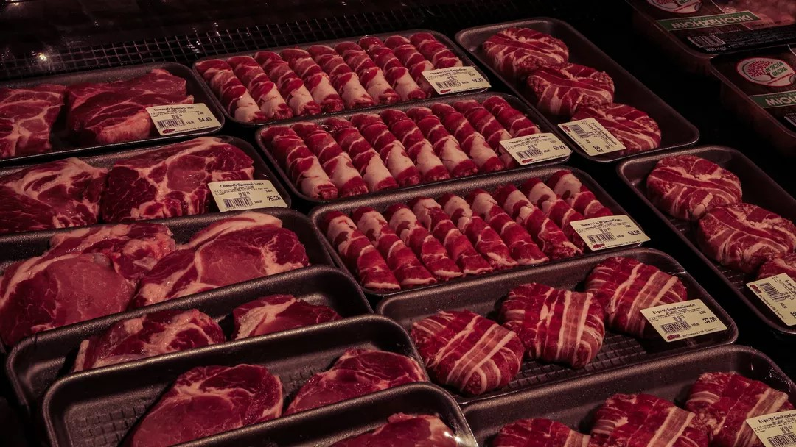

Carne pode ficar mais cara no Brasil por causa do tarifaço?

Publicado em: 31 de Julho de 2025
O tarifaço imposto pelos EUA para compra de produtos do Brasil terá alguma influência nos preços para o consumidor brasileiro, dizem analistas.
Ele deverá reforçar a tendência de alta para a carne, que viria naturalmente com a oferta menor de bois para o abate nos próximos meses. Clique para mais informações.
Ler Mais
Austrália inclui YouTube em proibição de redes para menores de 16 anos

Publicado em: 30 de Julho de 2025
Governo determinou que plataforma estará sujeita às mesmas regras que as outras. Austrália comprou uma briga com a maior plataforma de vídeos do mundo ao voltar atrás em uma promessa anterior de excluir o YouTube da proibição de redes sociais para crianças menores de 16 anos. Confira os detalhes.
Ler Mais
Casarão histórico e centro cultural de Belém será revitalizado como legado da COP30
Publicado em: 29 de Julho de 2025
Projeto de reforma é liderado pela gigante Bayer e prevê melhorias no espaço que oferece cursos e apoio social à comunidade local; Obras são previstas para acabar em agosto. Saiba tudo agora.
Ler Mais